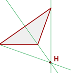

Alturas, medianas, mediatrices y bisectrices de un triángulo
Alturas, medianas, mediatrices y bisectrices de un triángulo
Alturas de un triángulo
Altura es cada una de las rectas perpendiculares trazadas desde un vértice al lado opuesto (o su prolongación).
Ortocentro
Es el punto de corte de las tres alturas.
Medianas de un triángulo
Mediana es cada una de las rectas que une el punto medio de un lado con el vértice opuesto.
Baricentro
Es el punto de corte de las tres medianas.
El baricentro divide a cada mediana en dos segmentos, el segmento que une el baricentro con el vértice mide el doble que el segmento que une baricentro con el punto medio del lado opuesto.
Mediatrices de un triángulo
Mediatriz es cada una de las rectas perpendiculares trazadas a un lado por su punto medio.
Circuncentro
Es el punto de corte de las tres mediatrices.
Es el centro de una circunferencia circunscrita al triángulo.
Bisectrices de un triángulo
Bisectriz es cada una de las rectas que divide a un ángulo en dos ángulos iguales.
Incentro
Es el punto de corte de las tres bisetrices.
Es el centro de una circunferencia inscrita en el triángulo.
Recta de Euler
El ortocentro, el baricentro y el circuncentro de un triángulo no equilátero están alineados; es decir, pertenecen a la misma recta, llamada recta de Euler.